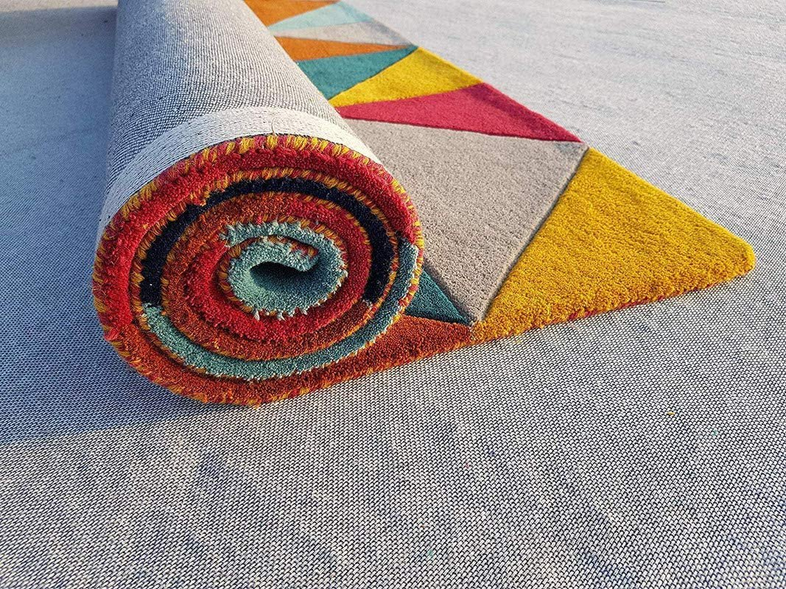

Aplikasi Serat
Pemanfaatan Produk
Benang DTY Indorama digunakan secara luas untuk memproduksi bahan tekstil berkualitas tinggi di berbagai sektor industri global.

Kain Pakaian
Diproduksi menjadi baju, celana, jilbab, hingga kaos olahraga yang lentur dan adem.

Tekstil Rumah
Digunakan untuk pembuatan sprei kasur lembut dan kain gorden rumah tangga.

Kain Furnitur
Dimanfaatkan sebagai bahan upholstery pelapis sofa dan dekorasi interior sejenis.

Tekstil Khusus
Diolah lebih lanjut menjadi karpet ruangan tebal serta rajutan kain elastis.